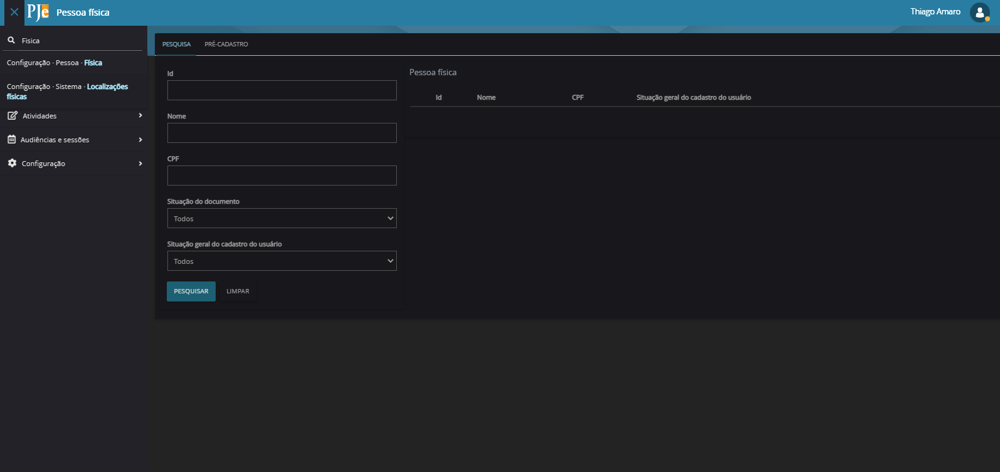

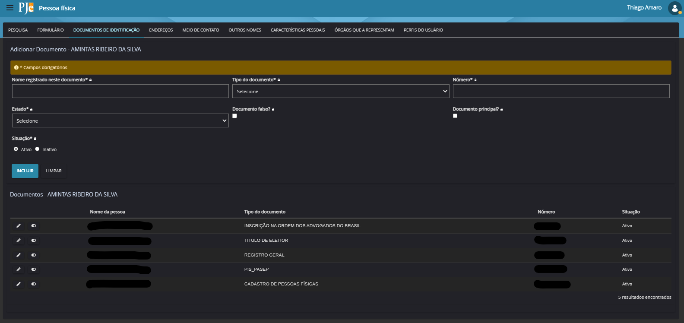
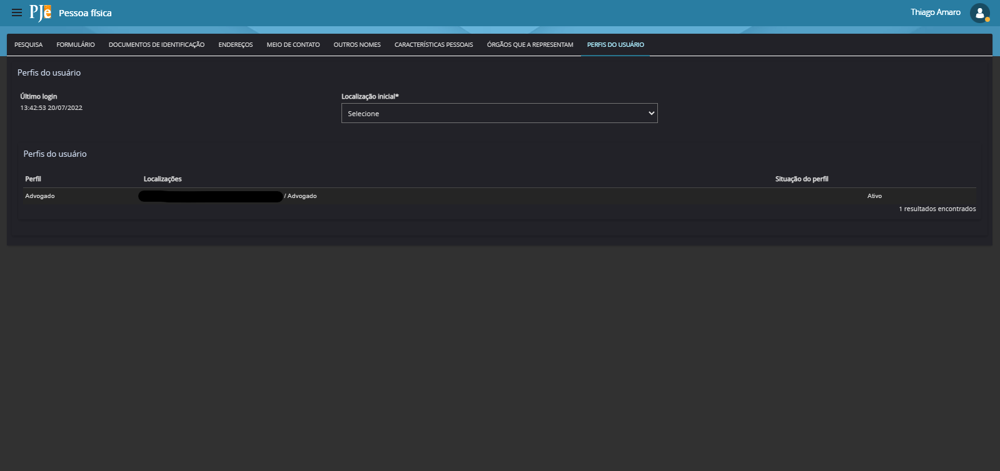
Pesquisa
- Basta inserir o CPF que deseja cadastrar e confirmar
- Caso não possua Certificado Digital, não poderá realizar a Recuperação dos Dados na Receita Federal e não conseguirá realizar cadastro
Formulário
- Para alterar o NOME no sistema
- E-mail deve conter apenas letras minúsculas. Caso esteja com maiúsculas ou espaços, alterar para que exista padrão e seja mais fácil de os usuários realizarem a recuperação de senha
- Cadastrar Estado, Naturalidade e Celular sempre que possível, de acordo com informações do chamado
- Salvar, para aplicar as mudanças
Documentos
- Em casos de alteração de NOME de cadastro, deve alterar o NOME em todos os Documentos disponíveis
- Para atualizar o CPF, deverá realizar a consulta no site da Receita Federal para consultar a data de expedição do CPF
- Cadastrar Estado, Naturalidade e Celular sempre que possível, de acordo com informações do chamado
- Salvar, para aplicar as mudanças
Perfis
- Mostra os perfis que o usuário possui
- Cada perfil possui um tipo de acesso as funcionalidades do PJe
- Mostra a última vez em que o usuário conseguiu acessar o sistema
- A localização inicial determina o perfil inicial do usuário ao acessar o sistema
Pesquisa Advogado
- É possível realizar pesquisa pelo NOME, CPF ou OAB
- Clicar no ícone de "lápis" para realizar consulta e alterações no perfil
- Clicar na lixeira caso seja necessário excluir o perfil de ADVOGADO
Confirmar Credenciamento
- Ao alterar o número da OAB, irá determinar a Inscrição principal que será representada nos processos
- É possível realizar alteração de e-mail nesta página ou na página da Pessoa Física
Documentos
- Representa a assinatura do Termo de Compromisso que o ADVOGADO assina ao realizar cadastro no PJe
- Caso não possua o Termo, o ADVOGADO não conseguirá realizar acesso e consulta ao PJe
Cadastro
- Basta inserir o CPF que deseja cadastrar e confirmar
- Caso não possua Certificado Digital, não poderá realizar a Recuperação dos Dados na Receita Federal e não conseguirá realizar cadastro
Pesquisa
- Pesquisar por nome ou CPF do Servidor que já possui algum perfil de Servidor
- Clicar no ícone de "lápis" para realizar consulta e alterações no perfil
- Clicar na lixeira caso seja necessário excluir o perfil (ex: deixou de ser servidor)
Formulário
- Pode ser cadastrado o e-mail do servidor
- Inclusão do número da matrícula
- habilitar ou desabilitar o perfil, sem a necessidade de exclusão
Localização
- Na caixa Órgão Julgador deverá selecionar onde o Servidor está Lotado
- Na caixa Modelo de Localização serão os cargos disponíveis naquele local, neste caso possuem apenas o Servidor e Estagiário. Outros órgãos possuem outras opções
- Na caixa Papel, ao clicar no símbolo "+", irá expandir para opções de perfis, deverá escolher o necessário para o cadastro de acordo com a solicitação de cadastro
Visibilidade
- Deve escolher o perfil que acabou de cadastrar
- É necessário que selecione TODOS em visibilidade, se não selecionar o usuário não terá acesso
- A data será o dia em que estiver realizando o cadastro
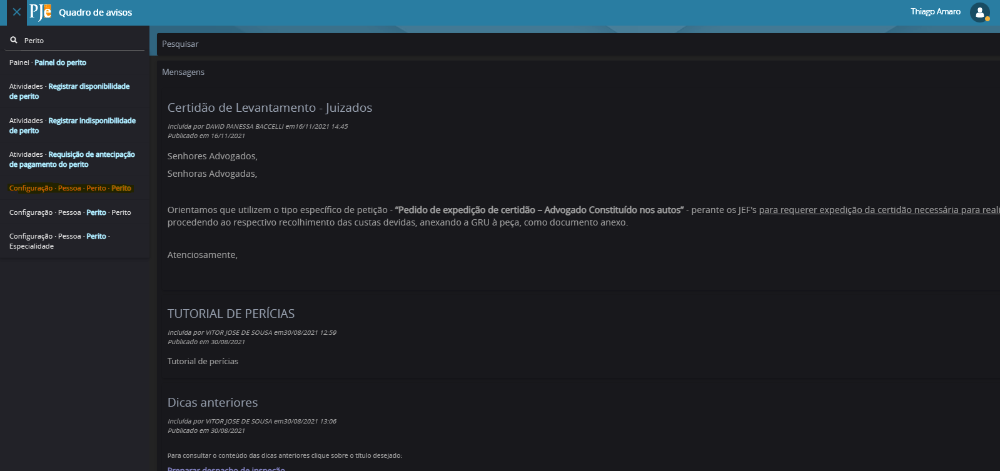
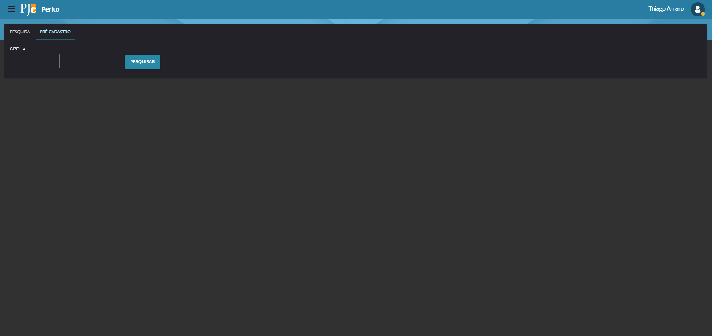
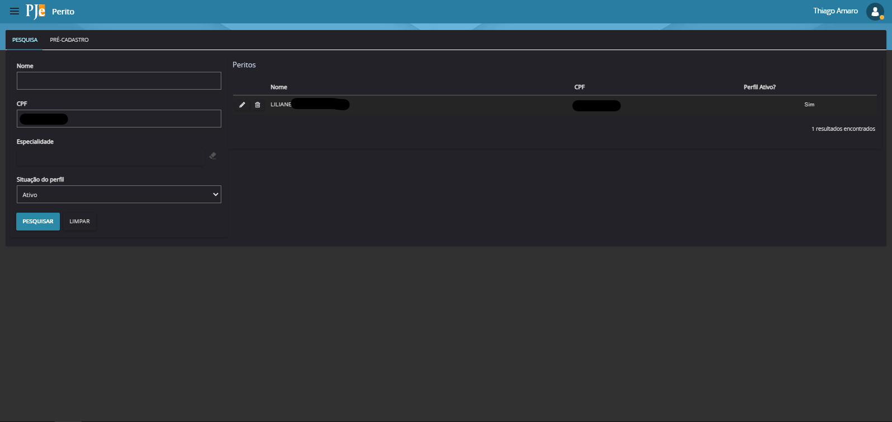

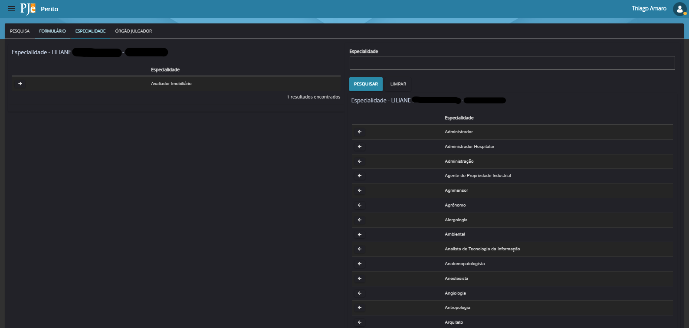
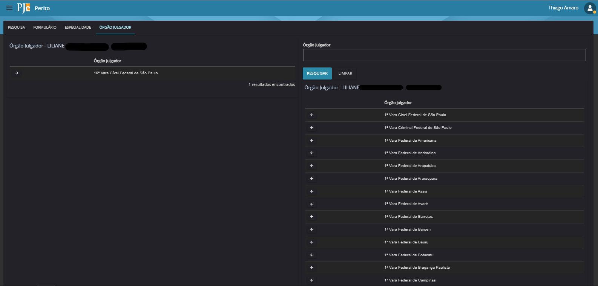
Menu
- Pesquisar por Perito e ir para opção "Configuração Pessoa Perito"
Cadastro
- Basta inserir o CPF que deseja cadastrar e confirmar
- Caso não possua Certificado Digital, não poderá realizar a Recuperação dos Dados na Receita Federal e não conseguirá realizar cadastro
Pesquisa
- Pesquisar por NOME ou CPF do Perito, se ele já possuir perfil. (Consutar Pessoa Física)
- Clicar no ícone de "lápis" para realizar consulta e alterações no perfil
- Clicar na lixeira caso seja necessário excluir o perfil
Formulário
- Deve preencher as informações do Formulário conforme dados solicitados e fornecidos no chamado de solicitação de cadastro
Especialidade
- Nesta aba deve conter as Especialidades em que o Perito atua
- Também será solicitado está informação no chamado
Órgão Julgador
- Primeiramente, deverá verificar o processo informado no chamado e consultar o chamamento do Perito nos autos
- Após confirmar, deve inserir o Órgão Julgador em que o Perito foi convocado para atuar
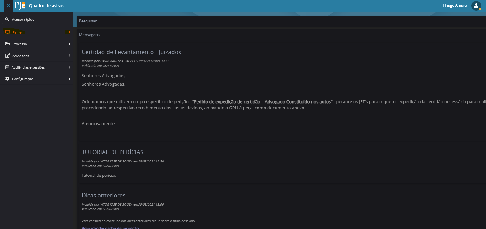

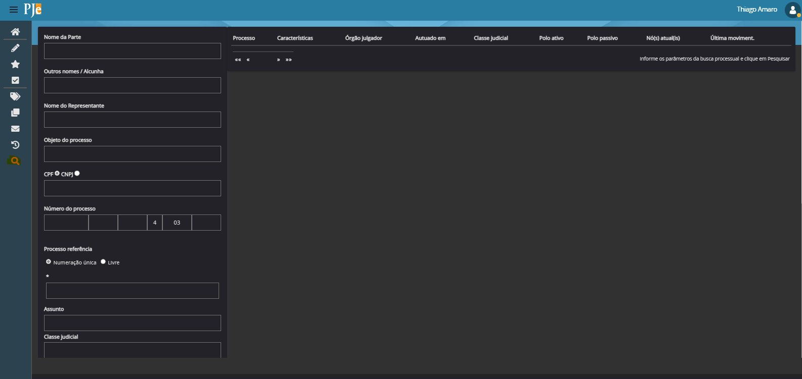
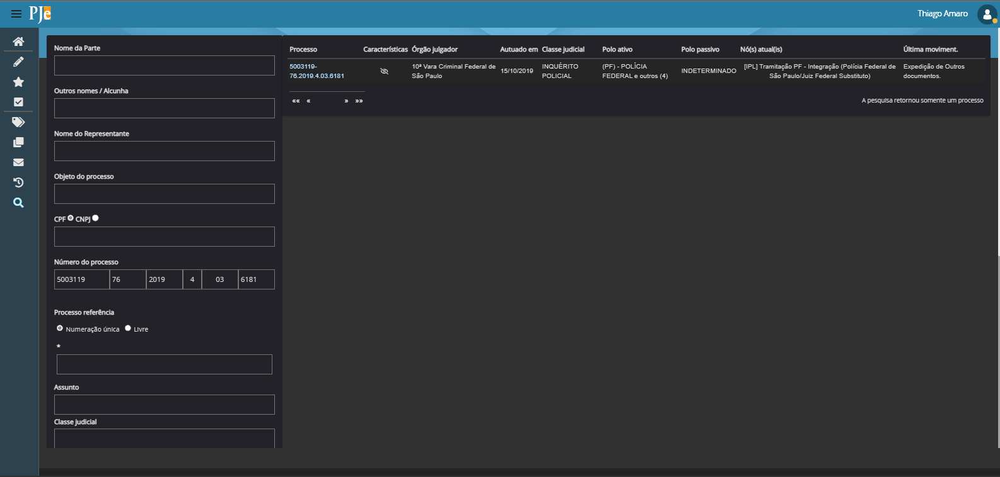
Menu
- Clicar em Menu → Painel e em seguida "Painel do Usuário"
Pesquisa
- Para procurar um Processo, clique na "LUPA" (última opção à esquerda)
- É possível procurar um processo com qualquer das opções, sendo Nome da Parte, Nome do Representante..
- É possível escolher alguns filtros abaixo, para diminuir o número de processos listados
- Após entrar com os dados, clique em Pesquisar
Processo
- Nesta tela, podemos ver as informações do Processo, onde está tramitando, quando foi protocolado, quais são os POLO, em qual tarefa ele está e qual foi a última movimentação
- Em características, temos três opções:
- Segredo de Justiça representado pelo ícone de Olho com traço
- Pedido de Liminar ou Tutela Antecipada representado pelo ícone de relógio
- Quando o pedido de tutela antecipada é acolhido então apresenta o ícone de "Jóia"
Processo
- Ao abrir o processo deve ir ao canto superior direito, clicar no MENU
- Para que o Despacho seja inserido na linha do tempo do processo e visualizado dentro do processo, ambas as partes devem dar ciência do documento juntado
Expedientes
- Deve abrir o item "Expedientes", verificar a opção em que não houve registro de ciência
- Caso a parte interessada não tenha registrado a ciência antecipada, deverá informar nos termo do art. 224 CPC que poderá realizar e visualizar atrávés do Painel do Representante ou através das Comunicações Processuais do CNJ
Documentos
- Deve abrir o item "Documentos", checar se possui um Despacho com um ícone de LUPA à direita, este mostra que o documento não obteve ciência de ambas as partes
- Poderá visualizar todas as informações dos documentos juntados ao processo
Pesquisa
- Ao indicar o processo para pesquisa, irá aparecer a Tarefa atual do Processo
- Clique na Tarefa para trazer o processo
- Ao clicar no número do processo, irá carregar as opções de remessa
- O ícone de "Livro" abrirá o processo por completo, assim poderá visualizar os últimos despachos e confirmar as últimas movimentações
Gerar Notificação Automática
- Para remeter o Processo, deverá clicar no ícone de "Seta" que irá mostrar as opções de remessa para a tarefa atual
- Neste caso, com o processo já em Tramitação Direta da PF e MPF ([IPL] Tramitação PF - Integração) as opções variam de acordo com a necessidade e com o pedido do chamado, que podem ser da PF ou do MPF
Alterar para Tramitação Direta
- Quando o processo estiver na tarefa "[IPL]Tramitação PF", representa o fluxo antigo, portanto devemos remeter ao novo fluxo [IPL] Tramitação PF - Integração
- Para isso, basta ir no mesmo ícone de "Seta" e escolher a opção "1. Encaminhar para apreciação do MPF"
- Irá gerar uma mensagem verde, positivando a alteração de tarefa
- Ao consultar novamente o processo, ele já estará na nova tarefa
Pesquisa
- Deve verificar em "Nós Atuais" para solicitar a exclusão das tarefas:
- [INSS] Preparar informação (Setor administrativo do INSS_São Paulo/Juiz Federal Titular)
- A outra tarefa será a que contém a parte de Remessa, porém deve verificar em cada processo solicitado para saber a Vara em que o processo está tramitando